Durch Anwahl des Buttons "Ok" im Programm "Bestellvorschlag erstellen" oder dem Menüpunkt…
1 WinLine FAKT
1 Einkauf
1 Bestellvorschlag bearbeiten
… kann das Programm "Bestellvorschlag bearbeiten" aufgerufen werden. An dieser Stelle ist es möglich automatisch erstellte Bestellvorschläge zu editieren oder neue Vorschläge manuell zu erstellen.
Hinweis
Ob es sich in weiterer Folge um eine Lieferantenbestellung oder um eine Lieferantenanfrage handeln soll, kann pro Artikelzeile entschieden werden!
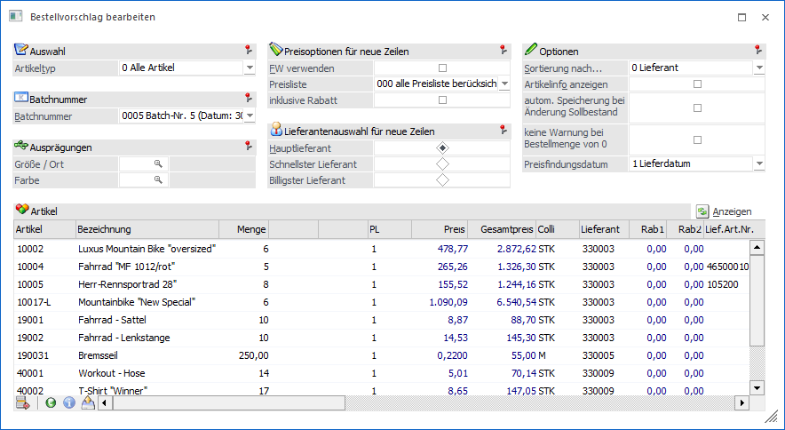
Folgende Eingabefelder und Einstellungen stehen zur Verfügung:
Selektion
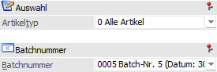
Ø Artikeltyp
Unter "Artikeltyp" kann festgelegt werden, welche Artikeltypen aus dem Bestellvorschlag (siehe Feld "Batchnummer") angezeigt bzw. bearbeitet werden sollen. Hierbei stehen folgende Einstellungen zur Verfügung:
ü 0 - Alle Artikel
ü 1 - Einkaufsartikel
ü 2 - Produktionsartikel
ü 3 - Fertigungsartikel
Ø Batchnummer
Jeder Bestellvorschlag wird in einer sogenannten "Batchnummer" zwischengespeichert, d.h. in einem Batch sind die Dispositionszeilen des Einkaufs enthalten. Diese Batchnummer bleiben dabei so lange bestehen, bis auf Grundlage des Batchs eine Anfrage bzw. Bestellung (siehe Programm "Lieferantenbelege erstellen") erstellt wurde.
An dieser Stelle muss nun per Auswahlliste definiert werden, welcher Bestellvorschlag bearbeitet werden soll oder ob die Anlage eines neuen Vorschlags gewünscht ist.
ü NEUEINGABE
Es wird ein neuer
Batch erzeugt. Die zu bestellenden Artikel werden in der Tabelle "Artikel"
hinterlegt.
ü ---- - auftragsbezogen
(Standard)
Es werden die auftragsbezogenen Bestellungen angezeigt, welche im
Standard-Stapel vorkommen.
ü AB0x - auftragsbezogen (Stapel
x)
Es werden nur die auftragsbezogenen Bestellungen angezeigt, welche im
Stapel x (1 bis 9) bereitstehen.
ü 0001 - Batch-Nr.1 (Datum: …)
Es
werden die Zeilen eines zuvor (automatisch oder manuell) erstellen
Bestellvorschlags angezeigt.
Hinweis 1
Durch Bestätigen der Batchauswahl wird die Batchnummer automatisch geladen und der Fokus in die Tabelle "Artikel" gelegt.
Hinweis 2
Die Batchnummer setzt sich wie folgt zusammen:
ü Batchnummer
ü Batchname
ü Batchbezeichnung (siehe Programm "Bestellvorschlag erstellen", Register "Bestellbatch bearbeiten")
ü Datum
ü Benutzer
Einschränkung der zu erfassenden Ausprägungen
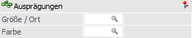
Ø Ausprägung 1 (hier "Größe / Ort") / Ausprägung 2 (hier "Farbe")
In den Feldern "Ausprägung 1" und / oder "Ausprägung 2" (die Felder werden gemäß der Ausprägungsdefinition angezeigt) können die zu bearbeitenden Ausprägungen eingeschränkt werden. D.h. ist in diesen Feldern eine Ausprägung eingetragen, so wird bei der Eingabe des Hauptartikels in der Tabelle "Artikel" automatisch der Ausprägungsartikel geladen, falls es nur einen Artikel für diese Ausprägung gibt.
Beispiel
Es gibt den "Rennrad" mit einer Ausprägung "Größe" (20, 22, 24, usw.). Wird im Feld "Ausprägung 1" (hier "Größe / Ort") z.B. die Ausprägung "22" eingegeben, so wird in der Tabelle beim Erfassen des Artikels "Rennrad" automatisch die Ausprägung "Rennrad 22" verwendet.
Es gibt das "Rennrad" mit den Ausprägungen "Größe" (20, 22, 24, usw.) und "Farbe" (rot, blau, usw.). Wird im Feld "Ausprägung 1" (hier "Größe / Ort") z.B. die Ausprägung "22" eingegeben, das Feld "Ausprägung 2" (hier "Farbe") jedoch leer gelassen, so wird in der Tabelle beim Erfassen des Artikels "Rennrad" KEINE Ausprägung, sondern der Hautpartikel verwendet.
Preisoptionen für neue Zeilen
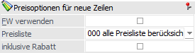
Ø FW verwenden
Durch Aktivieren der Checkbox "FW verwenden" werden auch Fremdwährungspreislisten bei der automatischen Lieferantenauswahl berücksichtigt.
Ø Preisliste
Aus der Auswahlliste kann eine Preisliste ausgewählt werden, welche bei der Lieferantenauswahl ausschließlich berücksichtigt werden soll. Durch die Einstellung "000 - alle Preise berücksichtigen" erfolgt keine Preislisteneinschränkung.
Ø inklusive Rabatte
Mit Hilfe dieser Option kann definiert werden, ob bei der automatischen Lieferantenauswahl nach "billigsten Lieferanten" auch hinterlegte Rabatte berücksichtigt werden sollen.
Lieferantenauswahl für neue Zeilen
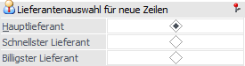
Ø Lieferantenauswahl für neue Zeilen
Hier kann entschieden werden, welcher Lieferant bei manuell hinzugefügten Artikelzeilen vorgeschlagen werden soll. Dabei gibt es die Möglichkeiten "Hauptlieferant", "schnellster Lieferant" und "billigster Lieferant". Beim Errechnen des billigsten Preises kann zusätzlich entschieden werden, ob Rabatte berücksichtig werden sollen oder nicht (siehe Bereich "Preisoptionen für neue Zeilen", Feld "inklusive Rabatte").
Optionen
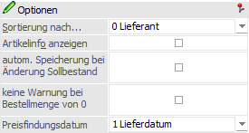
Mit Ausnahme der Option "Sortierung nach…" werden alle folgenden Optionen bzw. Einstellungen benutzerspezifisch gespeichert.
Ø Sortierung nach…
An dieser Stelle kann die Standardreihenfolge innerhalb der Tabelle "Artikel" für das Laden einer Batchnummer definiert werden.
Hinweis
Die Sortierung der Zeilen kann auch durch Anwählen der entsprechenden Spaltenüberschriften erfolgen.
Ø Artikelinfo anzeigen
Bei Aktivierung dieser Option wird neben der Tabelle "Artikel" ein Info-Formular geöffnet, in welchen Informationen zum jeweils aktuellen Artikel und ausgewählten Lieferanten angezeigt werden.
Ø autom. Speicherung bei Änderung Sollbestand
In der Tabelle "Artikel" gibt es unter anderem die Spalte "Lagersollbestand", welche im Standard zunächst über die rechte Maustaste (Option "Spalten anzeigen/verstecken") aktiviert werden muss. Innerhalb der Spalte wird der Sollbestand aus den Stammdaten des Artikels angezeigt und kann editiert werden, wobei die Änderung in den Artikelstamm zurückgeschrieben werden würde. Dieses Zurückschreiben kann nun wie folgt ablaufen:
ü Option "deaktiviert"
Wird in
der Spalte "Lagersollbestand" eine Änderung vorgenommen, so erscheint beim
Bestätigten der Zahl folgende Abfrage.
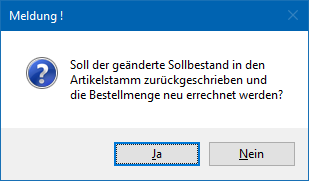
ü Option "aktiviert"
Durch
Aktivieren der Option "automatisches Speichern bei Änderung Sollbestand" wird
die Abfrage unterdrückt (siehe Option "deaktiviert"), die neu eingegebene Menge
wird automatisch in den Artikelstamm zurückgeschrieben und die Bestellmenge wird
ebenfalls neu ermittelt.
Ø keine Warnung bei Menge 0
Wenn im Programm "Bestellvorschlag erstellen" die Option "Artikel ohne Bedarf berücksichtigen" aktiviert wurde, so kann es vorkommen, dass im Bestellvorschlag bearbeiten Artikelzeilen mit Menge 0 ausgewiesen werden. Wenn nun solch eine Artikelzeile bearbeitet und die Menge mit 0 bestätigt wird, dann wird bei aktivierter Option eine entsprechende Meldung ausgegeben.
Hinweis
Artikelzeilen mit Menge 0 werden nicht in eine Lieferantenbestellung überführt.
Ø Preisfindungsdatum
An dieser Stelle kann für die Preisermittlung gesteuert werden, welches Basis-Datum für die sogenannte "Preisfindung" verwendet werden soll. Zusätzlich hat diese Einstellung eine Auswirkung auf die Bildung des Lieferdatums für neue Zeilen.
ü 1 - Lieferdatum
Das Lieferdatum
aus der Artikelzeile wird für die Preisfindung verwendet. Da dieses bei Eingabe
einer neuen Artikelzeile noch nicht feststeht, wird die erste Preisermittlung
(vor Eingabe der Menge) anhand des Tagesdatums durchgeführt. Das Lieferdatum für
neue Zeilen ermittelt sich nach der Logik "Tagesdatum +
Wiederbeschaffungstage".
Hinweis
Da eine Änderung des Lieferdatums einen anderen Preis zur Folge haben kann, wird bei Änderung des Datums eine optionale Preisfindung angeboten.
ü 2 - Tagesdatum
Das Anmeldedatum
in der WinLine wird für die Preisfindung verwendet. Das Lieferdatum für neue
Zeilen ermittelt sich nach der Logik "Tagesdatum + Wiederbeschaffungstage".
ü 3 - Systemdatum
Das
Betriebssystemdatum wird für die Preisfindung genommen. Das Lieferdatum für neue
Zeilen ermittelt sich nach der Logik "Systemdatum + Wiederbeschaffungstage".
Hinweis
Die Preisfindung wird immer automatisch ausgeführt, wenn die Menge oder die Preisliste geändert wird! Dieses gilt auch für die Änderung des Lieferanten, wobei hier die Einstellung "Lieferantenauswahl für neue Zeilen" wirkt. D.h. wenn aufgrund dieser Einstellung kein Preis gefunden wird (da der Preis z.B. nicht den Status "A" aufweist, aber der Hauptlieferant genutzt werden soll), so wird der Preis nicht automatisch übernommen!
Anzeigen

Ø Anzeigen
Durch Drücken des Buttons "Anzeigen" wird die Tabelle "Artikel" gemäß den zuvor getroffenen Einstellungen gefüllt.
Tabelle "Artikel"
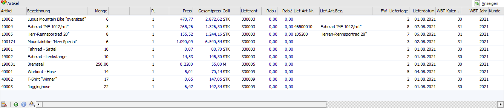
Durch Auswahl einer Batchnummer bzw. durch Anwahl des Buttons "Anzeigen" wird die Tabelle gemäß den zuvor getroffenen Einstellungen gefüllt. Grundsätzlich können bestehende Zeilen bearbeitet bzw. neue Zeilen hinzugefügt werden (ausgenommen bei der Anzeige der auftragsbezogenen Batchnummer).
Achtung
Die vorgeschlagenen Lieferanten und Preise bei neuen Artikelzeilen sind abhängig von den zuvor getroffenen Einstellungen!
Ø Artikelnummer
An dieser Stelle wird die Artikelnummer eingetragen, bzw. bei bestehenden Zeilen angezeigt.
Achtung
Artikel, welche das Kennzeichen "inaktiv" gesetzt haben, können nicht erfasst werden. Zusätzlich wird die Prüfung auf eventuell vorhandene Berechtigungsprofile durchgeführt (d.h. der Benutzer hat z.B. keine Berechtigung den Datensatz aufzurufen).
Hinweis - Ersatzartikel
Wenn ein Artikel mit Ersatzartikel erfasst wird, dann wird - je nach Einstellung im Artikelstamm (Register "Lager" - Unterregister "Einstellungen" - Option "automatischer Ersatz") - eine unterschiedliche Aktion ausgelöst:
ü 0 - nie automatisch
ersetzen
Der Artikel wird wie gewohnt geladen und kann editiert werden.
ü 1 - immer automatisch
ersetzen
Der erfasste Artikel wird automatisch durch den Ersatzartikel
ersetzt. Abhängig von der Artikelstammeinstellung "Verwendung" (Register "Lager"
- Unterregister "Einstellungen") wird der erste Artikel oder ggfs. auch ein
kaskadierter Artikel verwendet.
ü 2 - fragen
Nach der Eingabe der
Artikelnummer wird folgende Meldung angezeigt:
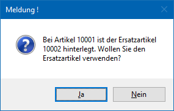
Ø Bezeichnung
In dieser Spalte wird die Bezeichnung des Artikels dargestellt und kann editiert werden.
Ø Menge / Menge 2
In diesen Feldern wird die Bestellmenge angezeigt und kann geändert werden.
Hinweis
Wird die Menge bei einem Artikel mit Reservierungskennzeichen geändert oder die Funktionstaste F8 gedrückt, so wird ein Aufteilungsfenster geöffnet, in welchem alle zugehörigen Kundenaufträge angezeigt und die Mengen bearbeitet werden können (nähere Informationen entnehmen Sie bitte dem Kapitel Bestellvorschlag - Artikelreservierung bearbeiten). Sollte wiederum das Lieferdatum für einen Artikel mit Reservierungskennzeichen geändert oder auch die Bestellzeile gelöscht werden, so werden die zugehörigen Reservierungszeilen ebenfalls mitgeändert.
Ø Variante
Handelt es sich um Produktionsartikel, so kann in dieser Spalte eine zuvor angelegte Variante ausgewählt werden.
Ø PL
An dieser Stelle kann die zu nutzende Preisliste definiert werden. Durch Änderung der Preisliste wird automatisch nach einem neuen Preis gesucht und dieser (falls vorhanden) eingetragen.
Ø Preis
In diesem Feld wird der Einzelpreis des Artikels angezeigt. Mit Hilfe der Taste F8 oder dem Tabellenbutton "Preisinfo öffnen" wird die Preisinformation geöffnet. Weitere Information zu der Preisfindung im Programm "Bestellvorschlag bearbeiten" entnehmen Sie bitte der Hilfe des Felds "Preisfindungsdatum".
Ø Gesamtpreis
An dieser Stelle wird die Summe der Bestellzeile ausgewiesen und ist nicht editierbar.
Ø Colli
An dieser Stelle wird der Colli des Artikels dargestellt, wobei dieser hier nicht geändert werden kann. Der Colli stammt dabei aus den Stammdaten des Artikels oder aus dem Preislisteneintrag des Lieferanten.
Ø Lieferant / Name
In diesen Spalten wird der Lieferant dargestellt bzw. hinterlegt, bei dem der Artikel bestellt oder angefragt werden soll.
Hinweis
Ist bei einem neu hinzugefügten Artikel kein Lieferant hinterlegt, so kann diese Zeile nicht verlassen werden; der Cursor springt automatisch in das Eingabefeld der Lieferantennummer.
Ø Rab1 / Rab2
In die Felder "Rab1" und kann "Rab2" kann jeweils ein Zeilenrabatt hinterlegt werden. Dabei wird vom Einzelpreis zunächst der Rabatt 1 und anschließend der Rabatt 2 gerechnet.
Hinweis
Ein Rabatt muss im Minus erfasst werden, ein Zuschlag hingegen positiv.
Ø Lieferantenartikelnummer / Lieferantenartikelbezeichnung
Wurde bei dem Preislisteneintrag des Lieferanten eine individuelle Artikelnummer und / oder Bezeichnung hinterlegt, so wird diese in diesen beiden Spalten angezeigt und kann editiert werden.
Hinweis
Bei Änderung der Menge wird geprüft, ob die hier hinterlegte Artikelnummer und / oder Bezeichnung zu jener des Preislisteneintrags passt. Wenn dem nicht der Fall ist, dann wird eine Übernahme aus dem Preislisteneintrag angeboten.
Ø FW
Handelt es sich bei der gewählten Preisliste um eine sogenannte Fremdwährungspreisliste, dann wird hier die Fremdwährung ausgewiesen. Der Inhalt der Spalte kann editiert werden.
Ø Liefertage / Lieferdatum / WBT-Kalenderwoche / WBT-Jahr
An diesen Stellen wird das gewünschte Lieferdatum angezeigt bzw. erfasst. Weitere Information zu der Bildung des Lieferdatums im Programm "Bestellvorschlag bearbeiten" entnehmen Sie bitte der Hilfe des Felds "Preisfindungsdatum".
Ø Kunde / Name / Laufnummer / Auftrag
Bei auftragsbezogenen Bestellvorschlägen bzw. bei Artikelzeilen, welche per Drag & Drop oder über die Funktion "Belegzeilen kopieren / Belegzeilen einfügen" eingefügt wurden, wird in diesen Feldern die Herkunft (d.h. der Verweis zum Ursprungsbeleg) dargestellt. Der Inhalt dieser Felder ist nicht änderbar.
Ø Kontraktnummer
Stammen die Lieferantenpreise aus einem Lieferantenkontrakt, so wird hier die entsprechende Kontraktnummer angezeigt.
Hinweis
Bitte beachten Sie den Bereich "Sonderfälle" am Ende des Kapitels.
Ø Lagersollbestand
An dieser Stelle wird der Lagersollbestand des Artikels gemäß Stammdaten angezeigt und kann editiert werden (siehe auch Option "autom. Speicherung bei Änderung Sollbestand").
Ø Lagermind.bestand
Hier wird der Mindestbestand des Artikels dargestellt. Eine Änderung an dieser Stelle ist nicht möglich.
Ø Bestätigtes Lieferdatum (Bezeichnungen lt. Einstellung in den Belegoptionen)
Dieses Feld steht zur Eingabe eines weiteren Datums (zusätzlich zum Lieferdatum) zur Verfügung. In weiterer Folge kann dieser Wert z.B. im Backlog oder in der Lieferantenmahnung ausgewertet werden.
Hinweis
Dieses Datum steht auch in den Batchbelegvorlagen zum Im- bzw. Export zur Verfügung, wird aber beim Kopieren von Belegen gelöscht.
Ø Sofort
Wird diese Option gesetzt so hat dieses zur Folge, dass das bestätigte Lieferdatum nicht geändert werden kann. Des Weiteren wird diese Option auch entsprechend in die Belegmittelteilszeilen geschrieben, wodurch ein Andruck auf verschiedenen Auswertungen möglich ist.
Ø Belegstufe
Mit Hilfe einer Auswahlliste kann festgelegt werden kann, ob für diesen Artikel in eine Lieferantenbestellung oder eine Lieferantenanfrage erzeugt werden soll.
Ø Verweisartikel
Bei dem Bearbeiten des Bestellvorschlags werden nur die Zeilen des zu bestellenden Artikels angezeigt, z.B. die Lagerausprägung für das Wareneingangslager. In diesem Feld wird der Artikel mit Bedarf (z.B. die Lagerausprägung eines Fremdfertigers) als Information angezeigt.
Hinweis
Bitte beachten Sie den Bereich "Sonderfälle" am Ende des Kapitels.
Ø rechte Maustaste
Durch Anwählen einer Artikelzeile mit der rechten Maustaste können verschiedene Aktionen durchgeführt werden:
ü Aufruf der Artikelbedarfsvorschau
ü Anzeige der Artikelinfo
ü Aufruf der EK- bzw. VK-Preishistorie
ü Aufruf des Artikels zur Bearbeitung im Artikelstamm
ü Anzeige des Lieferanten in der Konteninfo
Tabellenbuttons
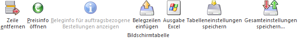
Ø Zeile entfernen
Durch Drücken des Buttons "Zeile entfernen" wird die aktuelle Artikelzeile aus dem Bestellvorschlag entfernt. Um mehrere Zeilen auf einmal zu löschen müssen diese selektiert werden. Dies erfolgt indem die "STRG"-Taste durchgehend gedrückt wird und gleichzeitig die einzelnen Zeilen markiert werden. Anschließend kann der "Teile entfernen"-Button gedrückt werden. Nach Bestätigung der Sicherheitsabfrage mit "Ja" werden die selektierten Zeilen gelöscht.
Ø Preisinfo öffnen
Bei Drücken dieses Buttons (eine Artikelzeile muss angewählt sein) öffnet sich das Fenster Preisinformation. In diesem werden Einkaufspreise des Artikels dargestellt. Zusätzlich können Preise per Doppelklick in den Bestellvorschlag übertragen werden.
Ø Beleginfo für auftragsbezogene Bestellungen anzeigen
Dieser Button steht nur bei auftragsbezogenen Bestellungen zur Verfügung. Durch Anwahl wird der Kundenauftrag zur gewählten Artikelzeile in der Vorschau dargestellt.
Ø Belegzeile einfügen
Durch Anwahl des Buttons "Belegzeile einfügen" werden die zuvor kopierten Zeilen (Quelle Belege / Belege - Matchcode bzw. Belegkurzinfo) eingefügt. Hierbei sind folgende Punkte zu beachten:
ü Es wird Artikelnummer und Menge aus dem Quellbeleg übernommen, wobei ausschließlich Artikelzeilen des Typs "1 - Artikel" und "9 - Nebenkosten" berücksichtigt werden.
ü Die Zeilen werden so eingefügt, als ob sie neu erfasst wurden, d.h. Datenfelder wie "Preis" und "Lieferant" und "Colli" etc. werden zurückgesetzt (d.h. nicht übernommen).
ü In den Spalten "Kunde", "Name", "Laufnummer" und "Auftrag" werden die Daten aus dem Quellbeleg angezeigt.
ü Das Einfügen von Artikelzeilen in einen auftragsbezogenen Batch ist nicht möglich!
ü Bereits aufgeteilte Hauptartikel werden nicht übernommen.
ü Bei Handels- und Fertigungsstücklisten werden (wie bei der manuellen Erfassung) keine Stücklisteninformation übernommen.
ü Bei Packageartikeln erfolgt eine Abfrage, ob nur der Artikel oder auch alle seine "Komponenten" übernommen werden sollen. Hierbei werden nur die Artikel als solches übernommen, d.h. nach dem Erstellen der Lieferantenbestellung sind die Artikel einzeln im Beleg vorhanden und haben keine Verbindung untereinander.
ü Wenn Artikel nicht erfasst werden können, da sie z.B. inaktiv sind oder keine Berechtigungen vorliegen, so wird eine entsprechende Meldung ausgegeben und die Übernahme abgebrochen. Die ggfs. noch folgenden Artikel werden nicht mehr eingefügt.
ü Handelt es sich um Artikel mit Menge2, so wird die Menge für den Einkauf aus dem Quellbeleg übernommen und mit dem Umrechnungsfaktor (aus dem Artikelstamm) die 2. Menge berechnet.
Hinweis
Neben der Nutzung der Tabellenbuttons "Belegzeile kopieren" und "Belegzeile einfügen" können Belegzeilen auch per Drag & Drop übertragen werden.
Ø Ausgabe Excel
Durch Anwahl des Buttons "Ausgabe Excel" wird der Inhalt der Tabelle nach Microsoft Excel übergeben.
Ø Tabelleneinstellungen speichern
Die Spalten einer Tabelle können grundsätzlich an beliebige Positionen verschoben, bzw. in der Breite entsprechend angepasst werden. Durch Anwahl des Buttons "Tabelleneinstellungen speichern" werden die Einstellungen benutzerspezifisch gespeichert und bei dem nächsten Aufruf des Programmpunktes wieder vorgeschlagen.
Ø Gesamteinstellungen speichern
Im Gegensatz zu "Tabelleneinstellungen speichern" können mit "Gesamteinstellungen speichern" mehrere Tabellenaufbauten gespeichert und nach Wunsch geladen werden. Zusätzlich werden Sonderfunktionen der Tabelle (z.B. "Spalte gruppieren") ebenfalls bei der Speicherung bedacht.
Buttons
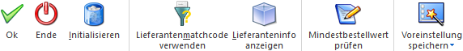
Ø Ok
Mit Drücken des Buttons "Ok" bzw. der Taste F5 wird der überarbeitete bzw. neu erstellte Bestellvorschlag gespeichert. Der Ausdruck der Bestellungen erfolgt anschließend mit Hilfe des Programms "Lieferantenbelege erstellen".
Ø Ende
Mit dem Button "Ende" bzw. der Taste ESC wird das Fenster geschlossen und alle nicht gespeicherten Eingaben verworfen.
Ø Initialisieren
Wird der Button "Initialisieren" gedrückt, so wird automatisch in den Menüpunkt "Bestellvorschlag initialisieren" gewechselt und der zuvor geladene Bestellvorschlag (Batchnummer) aus der Auswahlliste aktiviert.
Ø Lieferantenmatchcode verwenden
Wird diese Funktion aktiviert und in einer neuen Artikelzeile der Artikelmatchcode aufgerufen, so wird der Matchcode in dem Register "K-/L-Artikelmatch" geöffnet. Hierbei werden zusätzlich die Optionen für die Konten- und Gruppenanzeige aktiviert und die Art auf "1 - Kreditoren" bzw. "1 - Lieferantengruppe" gesetzt. Bei deaktivierter Funktion wird der zuletzt verwendete "Standardmatchcode" geöffnet.
Ø Lieferanteninfo anzeigen
Durch Aktivieren dieser Funktion (bleibt so lange aktiviert bis der Button erneut angewählt wird) erfolgt in einem eigenen Fenster eine Anzeige jener Lieferanten, die im Artikelstamm (des jeweiligen Artikels) hinterlegt sind.
Ø Mindestbestellwert prüfen
Durch Drücken dieses Buttons wird ein Prüflauf gestartet, der für alle vorhandenen Artikelzeilen, sowie alle Batchnummern den Mindestbestellwert (lt. Personenkontenstamm) prüft. Dazu wird ein entsprechendes Protokoll ausgegeben.
Hinweis
Ob der Mindestbestellwert unterschritten werden darf, wird in den FAKT-Parametern definiert.
Ø Voreinstellung speichern
Durch Anwahl dieses Buttons erfolgt eine benutzerspezifische Speicherung aller im Fenster getätigten Einstellungen. Diese sogenannten "Voreinstellungen" können jederzeit wieder abgerufen werden und ermöglichen dadurch ein schnelleres und zielorientierteres Arbeiten (nähere Informationen entnehmen Sie bitte dem Kapitel "Die Voreinstellungen").
Sonderfall - Bestellvorschlag mit verknüpfter Umbuchungsanforderung
Wenn beim Bestellvorschlag auf eine andere Lagerausprägung als die Artikelausprägung mit Bedarf (z.B. ein Fremdfertigerlager) bestellt wurde, entsteht eine Dispositionszeile, "Umbuchungsanforderung", für die Lagerausprägung mit Bedarf (der "Verweisartikel"). Beim Bearbeiten des Bestellvorschlags werden nur die Zeilen des zu bestellenden Artikels angezeigt, z.B. die Lagerausprägung für das Wareneingangslager. Wenn die Zeile gelöscht wird, wird auch die dazugehörige "Umbuchungsanforderung"-Zeile des Artikels mit Bedarf (z.B. die Ausprägung des Fremdfertigers) mitgelöscht.
Achtung
Mengenänderungen im Bestellvorschlag werden nicht in die Zeile des Artikels mit Bedarf übernommen (d.h. die Menge der "Umbuchungsanforderung"-Zeile wird dadurch nicht verändert).
Sonderfall - Kontrakte
Bei der Erstellung des Bestellvorschlags wird für alle Zeilen im "Bestellvorschlag bearbeiten" eine mögliche Überlieferung von Kontrakten geprüft. Ist die Überlieferung lt. FAKT-Parametern nicht erlaubt, so wird eine entsprechende Fehlermeldung während des Speicherung ausgegeben, das Speichern abgebrochen und der Fokus in die entsprechende Artikelzeile, ins Feld "Menge" gesetzt.
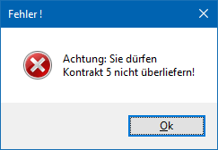
Im Feld "Menge" kann diese dann entsprechend geändert werden. Ist die angegebene Menge weiterhin über der noch offenen Kontraktmenge, so erfolgt eine weitere Meldung:
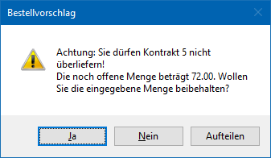
ü Durch Anwählen der Option "Ja" kann die angegebene - den Kontrakt überliefernde - Menge beibehalten werden
ü Mit der Option "Nein" wird die Menge auf die noch offene Kontraktmenge gesetzt
ü Die Option "Aufteilen" belegt die Artikelzeile mit der Menge des noch offenen Kontraktes vor und zusätzlich wird eine weitere Zeile mit der Restmenge eingefügt.
Ist lt. FAKT-Parametern die Übererfüllung von Kontrakten hingegen "erlaubt mit Warnung", dann erfolgt nach Anwählen der Menge in der jeweiligen Artikelzeile eine Warnung, dass der Kontrakt überliefert wird.
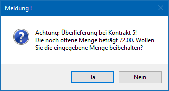
Mit den Optionen "Ja" oder "Nein" Kann die angegebene Menge auf die noch offene Kontraktmenge gesetzt oder die vorhandene Menge beibehalten werden.